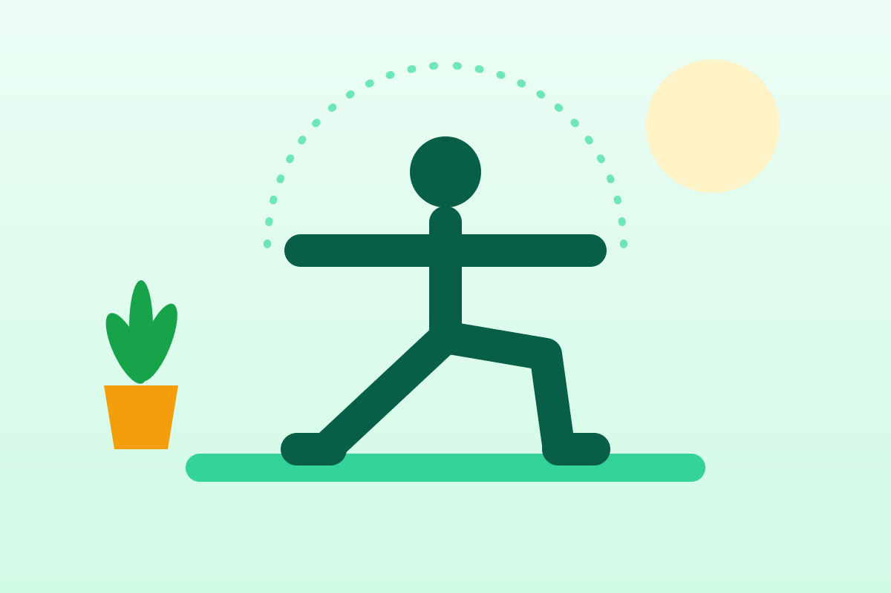

Мобильность и йога: 10 минут в день
Мобильность — это способность свободно и без боли двигаться во всей доступной амплитуде. Чтобы спина и бёдра сказали спасибо, хватит десяти минут в день.

Гибкость и мобильность — в чём разница
Гибкость — это то, насколько мышцы способны растянуться. Мобильность — понятие шире: это умение активно управлять движением в суставе, а не просто «висеть» в растяжке. Достать пол в наклоне — гибкость, а сделать глубокий присед с ровной спиной — мобильность.
В повседневной жизни важнее мобильность: она помогает легко наклоняться, поворачиваться, тянуться к верхней полке и меньше уставать от сидячей работы.
Чем полезна регулярная практика
- уменьшает скованность после долгого сидения;
- увеличивает амплитуду движений в суставах;
- улучшает равновесие — с возрастом это особенно важно: людям старше 65 лет ВОЗ советует упражнения на баланс и силу не реже трёх дней в неделю;
- успокаивает: медленное движение в сочетании с дыханием снижает напряжение.
Правила растяжки
- Динамическая растяжка — махи, вращения, выпады в движении — перед тренировкой. Статическая, с удержанием позы, — после тренировки или как отдельная практика.
- Удерживайте статическую позу 20–30 секунд и повторяйте 2–3 раза.
- Тянитесь до ощущения натяжения, но не боли.
- Никаких пружинящих рывков — двигайтесь плавно.
- Дышите ровно; на выдохе можно чуть углубиться в позу.
10-минутный комплекс
Подходит для утра, перерыва в работе или вечера. Нужен только коврик. Нажмите «Старт» — таймер подскажет, когда переходить к следующему упражнению.
Таймер комплекса
- Дыхание животомСидя, ладонь на животе. Медленный вдох носом — живот поднимается, затем долгий выдох.1:00
- Кошка — короваНа четвереньках: на вдохе мягко прогнитесь, на выдохе округлите спину.1:00
- Собака мордой внизТаз вверх, тело — перевёрнутая буква «V». Колени можно согнуть.0:45
- Низкий выпад: правая нога впередиЗаднее колено на коврике, таз мягко тянется вперёд и вниз.0:45
- Низкий выпад: левая нога впередиТо же на другую сторону.0:45
- Наклон вперёд стояКолени мягкие, голова и руки свободно висят. Поднимайтесь медленно.1:00
- Поза ребёнкаСядьте на пятки, вытяните руки вперёд, опустите лоб на коврик.1:00
- Скрутка лёжа вправоЛёжа на спине, опустите согнутые колени вправо, взгляд — влево.0:45
- Скрутка лёжа влевоТо же в другую сторону.0:45
- Ягодичный мостЛёжа на спине, стопы на полу. Медленно поднимайте и опускайте таз.0:45
- Расслабление лёжаРуки и ноги свободно, глаза закрыты. Просто наблюдайте за дыханием.1:30
Если вы много сидите
Каждые 30–60 минут вставайте хотя бы на пару минут. Три упражнения, которые можно сделать прямо у рабочего места:
- Круги плечами — по 10 вперёд и назад;
- Растяжка груди — встаньте в дверном проёме, упритесь предплечьями в косяки и мягко подайтесь вперёд на 20–30 секунд;
- Наклоны головы — ухо к плечу, по 20 секунд в каждую сторону, без рывков.
Когда нужна осторожность
Проконсультируйтесь с врачом или опытным инструктором, если у вас острая боль в спине или суставах, недавняя травма или операция, грыжа межпозвонкового диска, повышенная подвижность суставов или вы беременны. В йоге выбирайте занятия для начинающих и не пытайтесь повторять сложные позы с фотографий.